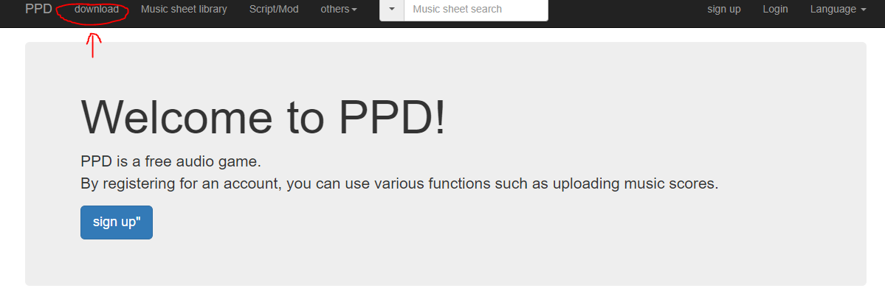
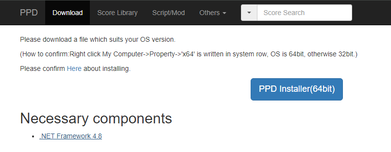
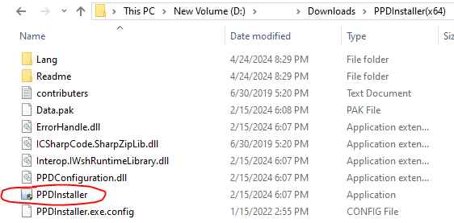
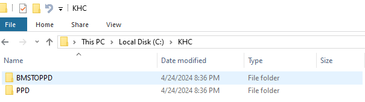
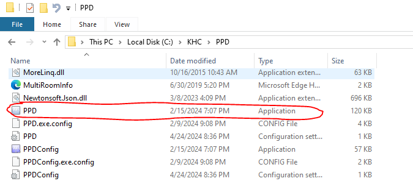
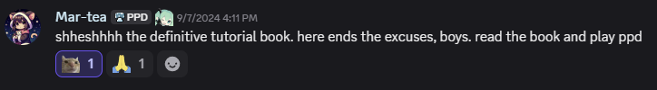

1. Open the official PPD website.
2. Click the "download" tab near the top left.
*You do not need a PPD account to play the game; however, you must have an account to save scores, upload custom charts, and have a profile picture + name during multiplayer.
3. Click the blue "PPD Installer (64bit)" button. This will download the PPDInstaller to your PC.
4. Extract and open the PPDInstaller folder, and start the application.
Select your language and download options.
Upon running the PPDInstaller, PPD will be located in the "KHC" folder.
Circled in red is the game itself. Click this to run the game.
This guide was originally written by Marathon (marathonguy). Thank you, Marathon!
